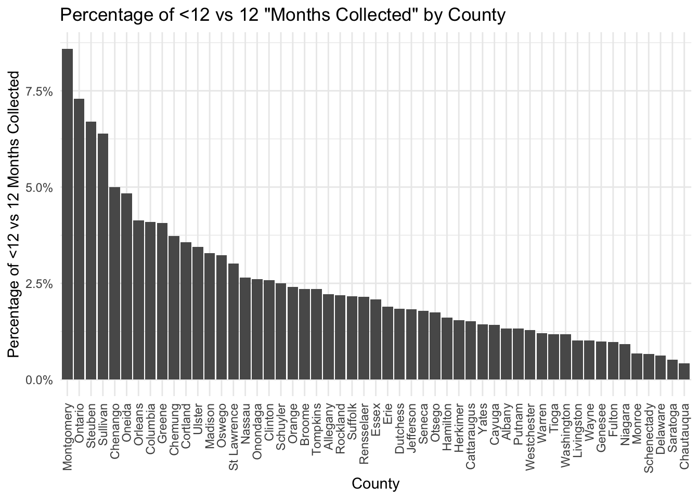
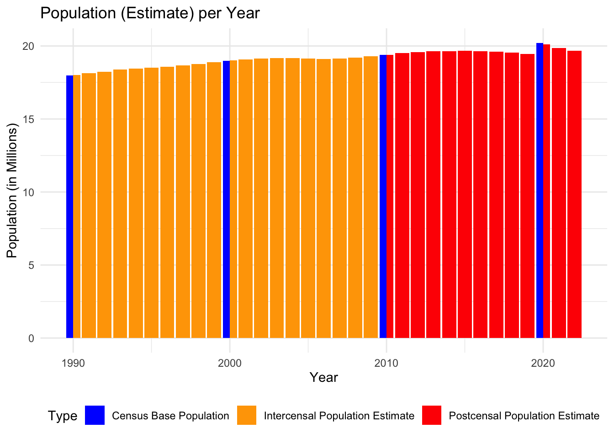

The dataset on Index Crimes by County and Agency in New York, is collected by the New York State Division of Criminal Justice Services, which obtains crime reports from more than 500 New York State police and sheriff’s departments. The data is formatted in a tabular structure, with columns specifying details like county, agency, year, region, and various crime categories. So, the dataset includes geographic information (county and agency), temporal information (year), and crime categories and contains roughly 22 thousand rows and 15 columns.
The reporting system gathers data on seven “index offenses”, commonly used to assess the overall volume of crime. These encompass violent crimes such as murder/non-negligent manslaughter, forcible rape, robbery, and aggravated assault, as well as property crimes like burglary, larceny, and motor vehicle theft.
The data has been collected since January 1990. The frequency of updates is on an annual basis, but the individual law enforcement agencies report their total crimes to the New York State Division of Criminal Justice Services monthly. Issues with the data include inconsistencies in reporting methods among different agencies, variations in the definition of crimes, or potential underreporting. We should be cautious about these nuances when interpreting trends or comparing regions and periods. Indeed, police agencies might need help with reporting, which could hinder accurate or comprehensive data submission. The figures reflect solely the crimes reported to the police and do not encompass the total number of crimes.
We carefully check that the data is consistent, i.e., that the various accumulations performed within the dataset are correct. We find some inconsistencies in the County Total accumulation in Albany from 1990-1997 and Nassau County in 1990. We discuss this further in the analysis of the missing values.
Since comparing crime numbers among the different counties only really makes sense if we normalize by population, we supplement our primary dataset, Index Crimes by County and Agency in New York, with an official population dataset, curated by the New York State Department of Labor. It has been updated yearly since 2014 and contains the (estimated) population by year of each county in NY state since 1970.
The dataset contains the FIPS (“Federal Information Processing Standards”) code of each NY state county, together with the name of the county (“Geography”), the year, and its population estimate. Finally, it includes a column, “Program Type,” detailing how the population number was estimated. The estimations are interpolations or extrapolations of the 10-year census data of NY State. Before 2010, the estimations were based on interpolations since for each year, in between the actual census data, both previous and following census numbers were known. However, after 2010, the data was kept as “point-in-time,” and therefore, the estimations were based solely on extrapolating the previous census numbers. It is essential to keep the data point-in-time, as changing the numbers in hindsight would lead to issues with models that use extrapolated data numbers.
The more detailed methodology of the “intercensal estimation” can be found here and here. Essentially, for intercensal estimates, they combine the data from the two censuses with death, birth, migration, and immigration data to provide an estimate. In contrast, for postcensal forecasts, they use the previous census data and the same external sources to provide an estimate.
2.2 Research plan
To answer research questions related to crime trends and influencing factors, our primary dataset offers a rich source of information.
2.2.1 Temporal aspects
Given the extensive span of thorough reporting within our primary dataset, we can conduct “longitudinal” studies, examine crime rates over multiple years, and identify particular trends and patterns. We can do this for all of NY State or county specific and compare trends between counties. For instance, it would be exciting to see whether vastly contrasting trends exist among the different counties.
Analyzing the data throughout the years enables assessing whether crime has increased, decreased, or remained stable. This could provide insights into the effectiveness of law enforcement strategies, changes in societal conditions, or potential impacts of specific events such as the COVID-19 pandemic. This could give a more nuanced understanding of the factors influencing crime dynamics. For example, an investigation on the impact of the implementation of “Operation Impact,” or commonly known as “stop-and-frisk,” could show how this policy has influenced the overall landscape of crime statistics. This exploration could offer compelling insights into the broader narrative of how policies like “stop-and-frisk” interact with and influence regional crime patterns.
2.2.2 Geographic aspects
A geographic analysis is also possible since our primary dataset contains location-specific information. Indeed, the dataset includes information on crimes reported by different counties and agencies. This allows us to compare crime rates across regions, potentially revealing interesting spatial patterns or clusters. For instance, we can compare the evolution of crime between NYC and NY state. Understanding variations in crime rates helps tailor interventions to specific areas.
Given the spatial information within the dataset, further supplementing it with demographic information would be interesting. This might involve exploring correlations between crime rates, socioeconomic factors, population density, or demographic shifts over time. Furthermore, if there are contrasting law enforcement strategies among different counties (or even agencies), we could potentially assess the impact of those strategies by analyzing changes in crime rates following the implementation of specific policies or practices. This might allow us to identify variations in reporting practices, law enforcement effectiveness, or community characteristics that may influence crime rates.
2.2.3 Crime specific aspects
Finally, the dataset is categorized into specific crime types. The primary objective is to discern noteworthy patterns, pinpoint potential areas of concern, and facilitate the formulation of targeted interventions aimed at addressing potential hotspots associated with particular crimes.
Moreover, our analytical scope extends beyond mere categorization; it encompasses a more exhaustive exploration of crime types and their intricate interrelationships. This expanded analysis not only seeks to uncover underlying connections between different crime categories but also aims to provide a comprehensive understanding of how these crime types evolve over time.
To enhance the depth of our investigation, we contemplate the integration of temporal elements, considering the impact of various policies or external factors such as the COVID-19 pandemic on the evolution of different crime types. By incorporating this temporal dimension, we aspire to conduct a nuanced examination of how specific crimes undergo transformations in the aftermath of significant events or policy implementations. This approach promises to yield valuable insights into the dynamic nature of crime and contribute to a more comprehensive understanding of the multifaceted factors influencing crime trends.
It is crucial to acknowledge potential limitations such as data inconsistencies, reporting biases, and missing information, which may affect the robustness of conclusions drawn from the analysis.
2.3 Missing value analysis and other inconsistencies
We shall now investigate our two datasets for missing values and inconsistencies and discuss if our findings will impact our research and results.
2.3.1 NY State crime dataset
We start by investigating the NY State crime dataset.
The data is well-sourced and only contains NA values for the “Months Reported” column. In particular, upon further investigation, it turns out that a lot of the NA values appear in the accumulated “County Total” rows because as soon as an Agency does not indicate the number of months they reported, this will lead to an NA value in the accumulation.
Below, we have summarized the percentage of NA values in the Months Collected column per county.
We notice that the five counties with the most missing value percentages in the “Months Collected” column are the ones where we do not have Agency-level data, but only “County Total” data. We believe these numbers were aggregated from different datasets, which may have varying degrees of accuracy concerning their monthly collected information.
While we are not specifically interested in the “months collected” column, we need to remember that if data was consistentlycollected for strictly less than 12 months per year, there might be a skew in the data. To get an estimate of how often we are dealing with data from less than 12 months (for the NA cases), we look at the respective fraction within the non-NA values.
Code
less_12 <- crime_ny[(crime_ny$Months.Reported <12) &!is.na(crime_ny$Months.Reported), ]less_12_cnt <- less_12 %>%group_by(County) %>%summarise(Count =n())no_na_crime_ny_cnt <- crime_ny[!is.na(crime_ny$Months.Reported), ] %>%group_by(County) %>%summarise(Count =n())merged_data <-merge(less_12_cnt, no_na_crime_ny_cnt, by ="County", all.x =TRUE)merged_data$pct <- merged_data$Count.x/merged_data$Count.ymerged_data <- merged_data[order(merged_data$pct, decreasing =TRUE), ]ggplot(merged_data, aes(x =reorder(County, -pct), y =100*pct)) +geom_bar(stat ="identity") +labs(title ="Percentage of <12 vs 12 \"Months Collected\" by County",x ="County", y ="Percentage of <12 vs 12 Months Collected") +scale_y_continuous(labels = scales::percent_format(scale =1)) +theme(axis.text.x =element_text(angle =90, vjust =0.5, hjust =1))

We observe that the data collected with less than 12 months compared against the data collected with precisely 12 months is relatively negligible. Based on this, we believe the missing NA values are primarily due to data collection negligence rather than drastic variations of the number of months data was reported/collected.
Apart from the missing values, we wanted to make sure that the data aggregation was performed consistently within the dataset. We first check that the columns sum to their respective total columns for each row and find that there is no inconsistency there:
Code
# Check that other entries sum to Index.Total:# First check Property Total + Violent Total == Index Totalcheck_result <- crime_ny %>%group_by(Year, County, Agency) %>%summarise(Sum_Other_Entries = Property.Total + Violent.Total, .groups ="drop") %>%left_join(crime_ny, by =c("Year", "County", "Agency")) %>%mutate(Check =ifelse(Sum_Other_Entries == Index.Total, "Pass", "Fail"))cat(nrow(check_result[check_result$Check!='Pass',]), ' rows with mismatch of Property Total + Violent Total == Index Total.\n')
0 rows with mismatch of Property Total + Violent Total == Index Total.
0 rows with mismatch of Murder + Rape + Robbery + Aggravated Assault == Violent Total.
Code
# First check Burglary + Larceny + Motor.Vehicle.Theft == Property Totalcheck_result <- crime_ny %>%group_by(Year, County, Agency) %>%summarise(Sum_Other_Entries = Burglary + Larceny + Motor.Vehicle.Theft, .groups ="drop") %>%left_join(crime_ny, by =c("Year", "County", "Agency")) %>%mutate(Check =ifelse(Sum_Other_Entries == Property.Total, "Pass", "Fail"))cat(nrow(check_result[check_result$Check!='Pass',]), ' rows with mismatch of Burglary + Larceny + Motor.Vehicle.Theft == Property Total \n')
0 rows with mismatch of Burglary + Larceny + Motor.Vehicle.Theft == Property Total
Finally, we would also like to check whether there is a mismatch between the County Total accumulation and the individual (by-agency) values. For the cases in which we have by-agency data, there is a minor mismatch between the summed data and the County total data in Nassau in 1990 and Albany between 1990 and 1997. It may be due to data from a missing agency, but we could not verify this explicitly.
In the plot above we compare the discrepancy in the total crime number for each inconsistency. We observe that the inconsistency is very minor and will not affect our analysis below.
It turns out that we are dealing with a well-cured dataset without any missing values.
As mentioned above, the population datasets contain population estimates for the years within/outside of census data. We want to visualize how well these estimations perform and whether there are significant discrepancies with the “actual” population numbers. Here, we take the census numbers as the ground truth, which is certainly sufficient for our purposes but may not be wise for more detailed studies.
To do so, we focus on the population numbers for the whole state as a representative. Furthermore, we restrict to data after 1990, as that is the period of interest for us:
Code
pop_ny_full_state <- pop_ny[(pop_ny$Geography =='New York State') & (pop_ny$Year >=1990), ]pop_ny_full_state <-rename(pop_ny_full_state, Type = Program.Type)ggplot(pop_ny_full_state, aes(x = Year, y = Population/1000000, fill = Type)) +geom_col(position ="dodge", width =0.9) +labs(title ="Population (estimate) per Year", x ="Year", y ="Population (in Millions)") +scale_fill_manual(values =c("Census Base Population"="blue", "Postcensal Population Estimate"="red",'Intercensal Population Estimate'='orange')) +theme_minimal() +theme(legend.position ="bottom")

Notice that we have estimates even for the census years (1990, 2000, 2010, and 2020); Their respective bars are split into two (and of different colors). The intercensal population estimates are in line with the census data (which makes sense), while there is a small jump between the 2019 estimate and the 2020 census data. As we remarked above, this dataset was created in 2014 and kept as point-in-time. Therefore, the forecast will be postcensal for anything after 2010.
The estimates will undoubtedly be good enough for our purposes. We are interested in the ratio crime/population size, and therefore will divide a relatively small number by a large number. Hence, minor errors in the population estimates will not affect any conclusions we draw in the following.